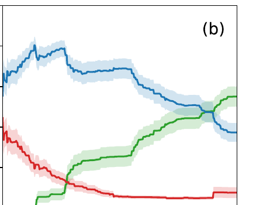

- Revisit butadiene in a full experiment — not a technical commissioning effort — and compare with methylated butadiene
- Explore a cooled jet to freeze out $v=0$
a) Butadiene

b) Methylated Butadiene (T-MeBD)

Adiabatic populations vs time (0–1000 fs): $S_0$ green, $S_1$ blue, $S_2$ red